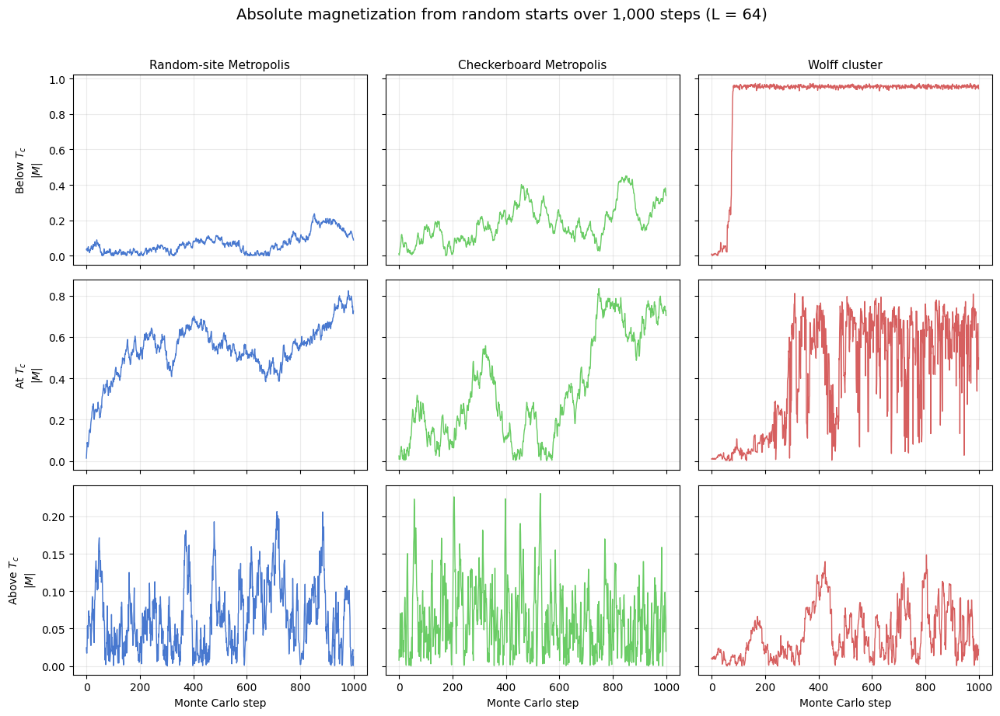
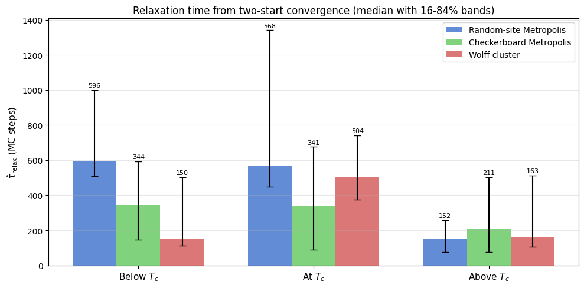
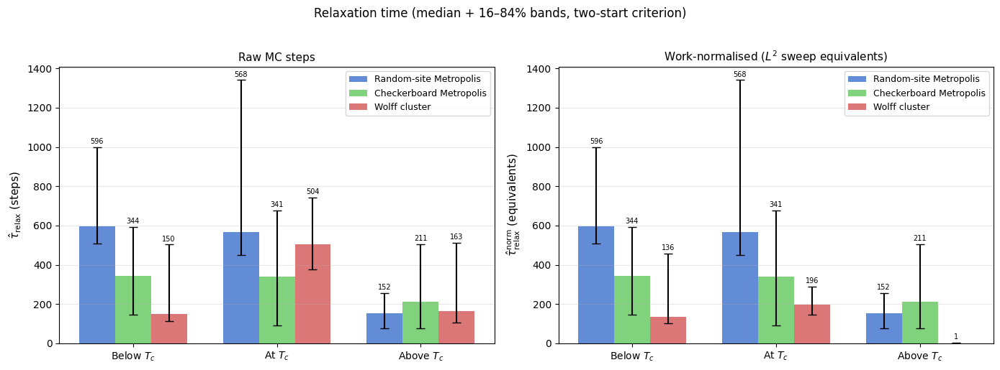
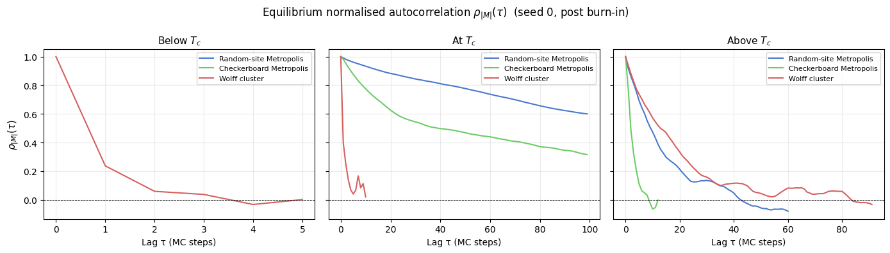
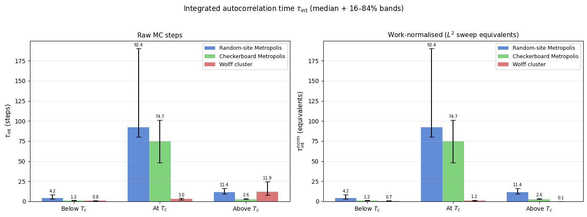

Ising Model: Relaxation to Equilibrium
When a Monte Carlo simulation starts from an arbitrary (e.g. random) configuration, the system is far from its thermal equilibrium state. During the initial relaxation (or thermalization) transient, observables drift systematically as the Markov chain moves toward the stationary distribution. Only after the chain has forgotten its starting point — after the relaxation time \(\tau_\text{relax}\) has elapsed — do the samples represent genuine thermal fluctuations that can be used for measurement.
This notebook quantifies relaxation to equilibrium for the 2D Ising model by comparing three update schemes:
Random-site Metropolis — one randomly chosen spin is proposed per step.
Checkerboard Metropolis — sites are swept in a fixed checkerboard pattern, eliminating the random-site overhead.
Wolff cluster — a whole correlated cluster is flipped in one move, dramatically reducing autocorrelation near \(T_c\).
All three algorithms start from the same deliberately unfavorable initial condition: a fully random spin configuration with no warm-up. The analysis is repeated below, at, and above the Onsager critical temperature \(T_c = 2/\ln(1 + \sqrt{2}) \approx 2.269\) [1], where critical slowing down makes relaxation slowest and the contrast between algorithms largest.
The notebook has four parts:
Visual demonstration — \(|M|\) trajectories make the transient and its temperature-dependence immediately visible.
Two-start relaxation time — a threshold-crossing estimator on two-start convergence extracts \(\hat{\tau}_\text{relax}\), the time for the chain to forget its initial condition.
Integrated autocorrelation time — \(\tau_\text{int}\) measures equilibrium memory and controls the effective sample size once in equilibrium.
Interpretation — both metrics are connected to critical slowing down, algorithm work normalisation, and the distinction between thermalization and statistical independence.
[1]:
from __future__ import annotations
import os
import matplotlib.pyplot as plt
import numpy as np
from models.ising_model import IsingSimulation
from utils.exceptions import ZeroVarianceAutocorrelationError
from utils.physics_helpers import calculate_autocorr, estimate_relaxation_time_two_start
TC_ISING = 2.0 / np.log(1.0 + np.sqrt(2.0))
L = 64
N_STEPS = 1000
TEMPS = [0.8 * TC_ISING, TC_ISING, 1.2 * TC_ISING]
TEMP_LABELS = ['Below $T_c$', 'At $T_c$', 'Above $T_c$']
UPDATES = ['random', 'checkerboard', 'wolff']
UPDATE_LABELS = {
'random': 'Random-site Metropolis',
'checkerboard': 'Checkerboard Metropolis',
'wolff': 'Wolff cluster',
}
PALETTE = {'random': '#4878CF', 'checkerboard': '#6ACC65', 'wolff': '#D65F5F'}
# Robust relaxation analysis settings (used at/near criticality)
SEEDS = np.array([11, 22, 33, 44, 55, 66, 77, 88, 99, 111], dtype=int)
INIT_STATES = ['random', 'ordered']
MAX_STEPS_FACTOR = 4
CACHE_PATH = '../results/ising/ising_autocorrelation_multiseed_analysis.npz'
print(f'Exact Onsager T_c = {TC_ISING:.6f}')
print(f'Notebook cache path: {CACHE_PATH}')
print(f'L = {L}, base N_STEPS = {N_STEPS}, seeds = {len(SEEDS)}')
Exact Onsager T_c = 2.269185
Notebook cache path: ../results/ising/ising_autocorrelation_multiseed_analysis.npz
L = 64, base N_STEPS = 1000, seeds = 10
Load or compute trajectories
If a cached trajectory file exists in ../results/ising/ising_autocorrelation_analysis.npz, the notebook reuses it directly. Otherwise it runs the three temperature slices inline and saves the resulting \(|M|\) time series for later reads. This keeps the notebook self-contained even though there is no separate batch script for this specific figure yet.
[2]:
max_steps = N_STEPS * MAX_STEPS_FACTOR
n_temp = len(TEMPS)
n_upd = len(UPDATES)
n_seed = len(SEEDS)
n_init = len(INIT_STATES)
wolff_idx = UPDATES.index('wolff')
needs_recompute = True
if os.path.exists(CACHE_PATH):
data = np.load(CACHE_PATH, allow_pickle=False)
required = {
'temperatures',
'updates',
'seeds',
'init_states',
'magnetization_traces_full',
'steps_used',
'wolff_cluster_sizes', # new field — forces rebuild of old caches
}
if required.issubset(set(data.files)):
magnetization_traces_full = data['magnetization_traces_full']
steps_used = data['steps_used']
wolff_cluster_sizes = data['wolff_cluster_sizes']
needs_recompute = False
print(
f'Loaded cached trajectories from {CACHE_PATH}: '
f'shape={magnetization_traces_full.shape}.'
)
if needs_recompute:
print('Compatible cache not found. Running multi-seed simulations and saving the result...')
magnetization_traces_full = np.full((n_temp, n_upd, n_seed, n_init, max_steps), np.nan, dtype=float)
steps_used = np.zeros((n_temp, n_upd, n_seed, n_init), dtype=int)
# Wolff cluster sizes are only meaningful for the Wolff update; shape mirrors the full array.
wolff_cluster_sizes = np.zeros((n_temp, n_seed, n_init, max_steps), dtype=int)
for i, temperature in enumerate(TEMPS):
for j, update in enumerate(UPDATES):
for s_idx, seed in enumerate(SEEDS):
for init_idx, init_state in enumerate(INIT_STATES):
is_critical_local = i == 1 and update in {'random', 'checkerboard'}
n_run = max_steps if is_critical_local else N_STEPS
sim = IsingSimulation(size=L, temp=temperature, update=update, seed=int(seed))
if init_state == 'ordered':
sim.spins = np.ones((L, L), dtype=np.int8)
if update == 'wolff':
mags, _, csizes = sim.run_with_cluster_sizes(n_steps=n_run)
wolff_cluster_sizes[i, s_idx, init_idx, :n_run] = csizes
else:
mags, _ = sim.run(n_steps=n_run)
magnetization_traces_full[i, j, s_idx, init_idx, :n_run] = np.asarray(mags, dtype=float)
steps_used[i, j, s_idx, init_idx] = n_run
print(
f' T={temperature:.3f}: all updates, {n_seed * n_init} trajectories each complete',
flush=True,
)
os.makedirs(os.path.dirname(CACHE_PATH), exist_ok=True)
np.savez(
CACHE_PATH,
temperatures=np.asarray(TEMPS, dtype=float),
temp_labels=np.asarray(TEMP_LABELS),
updates=np.asarray(UPDATES),
seeds=SEEDS,
init_states=np.asarray(INIT_STATES),
magnetization_traces_full=magnetization_traces_full,
steps_used=steps_used,
max_steps=np.asarray(max_steps, dtype=int),
wolff_cluster_sizes=wolff_cluster_sizes,
)
print(f'Saved cached trajectories to {CACHE_PATH}.')
# One representative random-start trace per (temp, update) for the visual panel.
magnetization_traces = magnetization_traces_full[:, :, 0, 0, :N_STEPS]
Loaded cached trajectories from ../results/ising/ising_autocorrelation_multiseed_analysis.npz: shape=(3, 3, 10, 2, 4000).
Magnetization traces
Each panel shows the absolute magnetization \(|M|\) over the first 1,000 updates after a random start. The comparison is deliberately qualitative: below \(T_c\) the system should lock into an ordered state, near \(T_c\) the trajectories should remain noisy for much longer, and above \(T_c\) they should fluctuate around a small mean.
[3]:
fig, axes = plt.subplots(3, 3, figsize=(13, 9), sharex=True, sharey='row')
fig.suptitle(
f'Absolute magnetization from random starts over {N_STEPS:,} steps (L = {L})',
fontsize=14,
y=1.02,
)
for i, temp_label in enumerate(TEMP_LABELS):
for j, update in enumerate(UPDATES):
ax = axes[i, j]
ax.plot(
np.abs(magnetization_traces[i, j]),
lw=1.0,
color=PALETTE[update],
)
if i == 0:
ax.set_title(UPDATE_LABELS[update], fontsize=11)
if j == 0:
ax.set_ylabel(f'{temp_label}\n$|M|$')
if i == len(TEMPS) - 1:
ax.set_xlabel('Monte Carlo step')
ax.grid(alpha=0.25)
fig.tight_layout()
plt.show()

Quantitative relaxation-time analysis (multi-seed, two-start)
Near \(T_c\), one-trajectory criteria are noisy and can misclassify equilibration. We therefore estimate relaxation with a two-start convergence test for every seed:
Run the same (temperature, update, seed) from two initial states: a random state and a fully ordered state.
Smooth both \(|M|\) traces with a short moving average.
Estimate an equilibrium scale from the second half of both traces combined.
Define \(\hat{\tau}_\text{relax}\) as the first time where both smoothed traces are simultaneously inside the same equilibrium band and remain so for a sustained dwell window.
This measures when the dynamics has effectively forgotten the initial condition, which is the operational definition we want for thermalization.
[4]:
TOLERANCE_K = 1.0
SMOOTH_WINDOW = 30
DWELL_WINDOW = 30
MIN_FRACTION_INSIDE = 0.85
tau_samples = np.empty((len(TEMPS), len(UPDATES), len(SEEDS)), dtype=float)
for i in range(len(TEMPS)):
for j in range(len(UPDATES)):
for s_idx in range(len(SEEDS)):
trace_r = magnetization_traces_full[i, j, s_idx, 0]
trace_o = magnetization_traces_full[i, j, s_idx, 1]
tau_samples[i, j, s_idx] = estimate_relaxation_time_two_start(
trace_r,
trace_o,
k=TOLERANCE_K,
smooth_window=SMOOTH_WINDOW,
dwell_window=DWELL_WINDOW,
min_fraction_inside=MIN_FRACTION_INSIDE,
)
# Robust central tendency and uncertainty across seeds
median_tau = np.median(tau_samples, axis=2)
p16_tau = np.percentile(tau_samples, 16, axis=2)
p84_tau = np.percentile(tau_samples, 84, axis=2)
# --- Table printout ---
col_w = 34
header = f"{'Temperature':<18}" + "".join(f"{UPDATE_LABELS[u]:>{col_w}}" for u in UPDATES)
print(header)
print('-' * len(header))
for i, label in enumerate(TEMP_LABELS):
entries = []
for j in range(len(UPDATES)):
med = median_tau[i, j]
lo = p16_tau[i, j]
hi = p84_tau[i, j]
entries.append(f"{med:5.0f} [{lo:4.0f}, {hi:4.0f}]")
row = f"{label:<18}" + ''.join(f"{e:>{col_w}}" for e in entries)
print(row)
print(
f"\n(seeds = {len(SEEDS)}, k = {TOLERANCE_K}, smooth = {SMOOTH_WINDOW}, "
f"dwell = {DWELL_WINDOW}, min_fraction_inside = {MIN_FRACTION_INSIDE:.2f}, L = {L})"
)
print('Each entry is median [16th, 84th percentile] over seeds.')
print(
f"Note: at T_c, local updates run for {max_steps} steps "
f"(N_STEPS \u00d7 MAX_STEPS_FACTOR = {N_STEPS} \u00d7 {MAX_STEPS_FACTOR}); "
"Wolff and off-critical runs use N_STEPS."
)
# --- Bar chart with error bars ---
x = np.arange(len(TEMPS))
width = 0.25
fig, ax = plt.subplots(figsize=(10, 5))
for j, update in enumerate(UPDATES):
y = median_tau[:, j]
yerr = np.vstack([y - p16_tau[:, j], p84_tau[:, j] - y])
bars = ax.bar(
x + (j - 1) * width,
y,
width=width,
yerr=yerr,
capsize=4,
label=UPDATE_LABELS[update],
color=PALETTE[update],
alpha=0.85,
)
ax.bar_label(bars, fmt='%.0f', fontsize=8, padding=2)
ax.set_xticks(x)
ax.set_xticklabels(TEMP_LABELS, fontsize=11)
ax.set_ylabel(r'$\hat{\tau}_\mathrm{relax}$ (MC steps)', fontsize=11)
ax.set_title('Relaxation time from two-start convergence (median with 16-84% bands)', fontsize=12)
ax.legend(fontsize=10)
ax.grid(axis='y', alpha=0.3)
fig.tight_layout()
plt.show()
Temperature Random-site Metropolis Checkerboard Metropolis Wolff cluster
------------------------------------------------------------------------------------------------------------------------
Below $T_c$ 596 [ 510, 1000] 344 [ 147, 593] 150 [ 111, 503]
At $T_c$ 568 [ 450, 1341] 341 [ 91, 675] 504 [ 375, 742]
Above $T_c$ 152 [ 75, 257] 211 [ 76, 504] 163 [ 106, 513]
(seeds = 10, k = 1.0, smooth = 30, dwell = 30, min_fraction_inside = 0.85, L = 64)
Each entry is median [16th, 84th percentile] over seeds.
Note: at T_c, local updates run for 4000 steps (N_STEPS × MAX_STEPS_FACTOR = 1000 × 4); Wolff and off-critical runs use N_STEPS.

Work-normalised relaxation time
The raw step counts above are not directly comparable because one Monte Carlo step means very different things for each algorithm:
Algorithm |
Work per step |
|---|---|
Local Metropolis (random or checkerboard) |
\(L^2\) single-spin flip attempts |
Wolff cluster |
1 cluster flip of \(\langle C \rangle\) spins — acceptance rate 100% |
A common convention is to express time in units of “one \(L^2\) flip-attempt sweep”. Under this convention:
\(\langle C \rangle\) is now taken directly from the per-step cluster sizes recorded by run_with_cluster_sizes() and stored in the cache — no proxy estimator needed, so the below-\(T_c\) values are reliable for the first time.
[5]:
# --------------------------------------------------------------------
# 1. Compute exact mean Wolff cluster size <C> per temperature.
# wolff_cluster_sizes shape: (n_temp, n_seed, n_init, max_steps)
# We use only the equilibrated second half of the random-start trajectories.
# --------------------------------------------------------------------
mean_C = np.empty(len(TEMPS))
for i in range(len(TEMPS)):
all_sizes = []
for s_idx in range(n_seed):
n_valid = steps_used[i, wolff_idx, s_idx, 0] # random-start run length
csizes = wolff_cluster_sizes[i, s_idx, 0, :n_valid]
half = n_valid // 2
all_sizes.append(csizes[half:]) # equilibrated half only
mean_C[i] = np.concatenate(all_sizes).mean()
print('Exact mean Wolff cluster size <C> per temperature (from recorded step data):')
for i, (label, c) in enumerate(zip(TEMP_LABELS, mean_C)):
print(f' {label}: <C> = {c:.1f} spins (<C>/L² = {c / L**2:.4f})')
# --------------------------------------------------------------------
# 2. Work-normalisation factor per (temperature, update).
# Local: 1 step = L² flip-attempts → factor = 1.
# Wolff: 1 step = <C> flips → factor = <C> / L².
# --------------------------------------------------------------------
L2 = L * L
work_factor = np.ones((len(TEMPS), len(UPDATES)))
for i in range(len(TEMPS)):
work_factor[i, wolff_idx] = mean_C[i] / L2
# --------------------------------------------------------------------
# 3. Apply normalisation to per-seed tau samples.
# --------------------------------------------------------------------
tau_norm_samples = tau_samples * work_factor[:, :, np.newaxis]
median_tau_norm = np.median(tau_norm_samples, axis=2)
p16_tau_norm = np.percentile(tau_norm_samples, 16, axis=2)
p84_tau_norm = np.percentile(tau_norm_samples, 84, axis=2)
# --- Table ---
col_w = 34
header = f"{'Temperature':<18}" + ''.join(f'{UPDATE_LABELS[u]:>{col_w}}' for u in UPDATES)
print('\nWork-normalised relaxation time (in L² sweep equivalents):')
print(header)
print('-' * len(header))
for i, label in enumerate(TEMP_LABELS):
entries = []
for j in range(len(UPDATES)):
med = median_tau_norm[i, j]
lo = p16_tau_norm[i, j]
hi = p84_tau_norm[i, j]
entries.append(f'{med:5.0f} [{lo:4.0f}, {hi:4.0f}]')
print(f'{label:<18}' + ''.join(f'{e:>{col_w}}' for e in entries))
print(f'\n(units: equivalent L²={L2} flip-attempt sweeps | L = {L} | seeds = {n_seed})')
# --- Side-by-side bar charts ---
x = np.arange(len(TEMPS))
width = 0.25
fig, axes = plt.subplots(1, 2, figsize=(14, 5))
for ax_idx, (ax, ydata, yp16, yp84, title) in enumerate(zip(
axes,
[median_tau, median_tau_norm],
[p16_tau, p16_tau_norm],
[p84_tau, p84_tau_norm],
['Raw MC steps', r'Work-normalised ($L^2$ sweep equivalents)'],
)):
bar_containers = []
for j, update in enumerate(UPDATES):
y = ydata[:, j]
yerr = np.vstack([y - yp16[:, j], yp84[:, j] - y])
bars = ax.bar(
x + (j - 1) * width, y, width=width, yerr=yerr, capsize=4,
label=UPDATE_LABELS[update], color=PALETTE[update], alpha=0.85,
)
ax.bar_label(bars, fmt='%.0f', fontsize=7, padding=2)
bar_containers.append(bars)
ax.set_xticks(x)
ax.set_xticklabels(TEMP_LABELS, fontsize=10)
ax.set_title(title, fontsize=11)
ax.legend(fontsize=9)
ax.grid(axis='y', alpha=0.3)
axes[0].set_ylabel(r'$\hat{\tau}_\mathrm{relax}$ (steps)', fontsize=11)
axes[1].set_ylabel(r'$\hat{\tau}_\mathrm{relax}^\mathrm{norm}$ (equivalents)', fontsize=11)
fig.suptitle('Relaxation time (median + 16–84% bands, two-start criterion)', fontsize=12, y=1.02)
fig.tight_layout()
plt.show()
Exact mean Wolff cluster size <C> per temperature (from recorded step data):
Below $T_c$: <C> = 3713.7 spins (<C>/L² = 0.9067)
At $T_c$: <C> = 1593.3 spins (<C>/L² = 0.3890)
Above $T_c$: <C> = 20.3 spins (<C>/L² = 0.0050)
Work-normalised relaxation time (in L² sweep equivalents):
Temperature Random-site Metropolis Checkerboard Metropolis Wolff cluster
------------------------------------------------------------------------------------------------------------------------
Below $T_c$ 596 [ 510, 1000] 344 [ 147, 593] 136 [ 101, 456]
At $T_c$ 568 [ 450, 1341] 341 [ 91, 675] 196 [ 146, 289]
Above $T_c$ 152 [ 75, 257] 211 [ 76, 504] 1 [ 1, 3]
(units: equivalent L²=4096 flip-attempt sweeps | L = 64 | seeds = 10)

Integrated autocorrelation time
The two-start convergence test is a non-equilibrium diagnostic: it asks when the chain has forgotten its starting configuration. Once in equilibrium, the complementary question is “how statistically independent are consecutive samples?” — answered by the integrated autocorrelation time \(\tau_\text{int}\).
Given post-burn-in samples of observable \(A_t\), define the normalised autocorrelation function:
The integrated autocorrelation time is then:
Its practical significance is direct: if you collect \(N\) post-burn-in steps and estimate the mean \(\bar{A}\), the statistical error is
In other words, \(N / (2\tau_\text{int})\) is the effective number of independent samples — so \(\tau_\text{int}\) directly controls the cost of any equilibrium measurement.
The upper limit \(W\) uses the Madras–Sokal automatic window [4] [5]: increase \(W\) one step at a time and stop as soon as \(W \geq c\,\tau_\text{int}(W)\), with \(c = 5\). This cuts off the noisy tail of \(\rho\) before it inflates the estimate.
The burn-in discarded here equals \(\hat{\tau}_\text{relax}\) from the two-start analysis — each of the 10 seeds uses its own per-seed estimate. Note that the existing trajectories were designed for the thermalization study (1 000–4 000 steps); below \(T_c\) for local updates the post-burn-in window is short (~400 steps), so those \(\tau_\text{int}\) estimates carry larger uncertainty than the others.
[6]:
# =====================================================================
# Integrated autocorrelation time τ_int
# Observable: |M|. Burn-in per seed taken from per-seed τ_relax above.
# =====================================================================
ACORR_C = 5 # Madras–Sokal window constant
ACORR_MAX_LAG = 400 # hard cap on lag search
def _notebook_autocorr(
trace: np.ndarray,
burn_in: int,
c: float = ACORR_C,
max_lag: int = ACORR_MAX_LAG,
) -> tuple[float, int, np.ndarray]:
"""
Thin wrapper around utils.physics_helpers.calculate_autocorr.
Applies burn-in, strips non-finite values, and returns NaN instead of
raising for degenerate traces. Returns (tau_int, window_W, rho[0..W]).
"""
x = np.abs(np.asarray(trace, dtype=float))
finite_idx = np.where(np.isfinite(x))[0]
if finite_idx.size == 0:
return np.nan, 0, np.array([1.0])
x = x[finite_idx[0]: finite_idx[-1] + 1]
bi = max(0, int(burn_in))
if bi >= len(x) - 4:
return np.nan, 0, np.array([1.0])
x = x[bi:]
try:
C_t, tau_int = calculate_autocorr(
time_series=x,
max_lag=min(max_lag, len(x) // 4),
window_constant=float(c),
)
except ZeroVarianceAutocorrelationError:
return 0.5, 1, np.array([1.0])
return float(tau_int), len(C_t) - 1, C_t
# --- Compute τ_int per (temperature, update, seed) ---
tau_int_samples = np.full((n_temp, n_upd, n_seed), np.nan)
acorr_rho_rep = {} # representative ρ curve per (i, j) for plotting (seed 0)
for i in range(n_temp):
for j in range(n_upd):
for s_idx in range(n_seed):
burn_in = int(tau_samples[i, j, s_idx])
trace = magnetization_traces_full[i, j, s_idx, 0]
ti, _w, _ = _notebook_autocorr(trace, burn_in)
tau_int_samples[i, j, s_idx] = ti
# representative curve: seed 0
burn0 = int(tau_samples[i, j, 0])
_, _, rho0 = _notebook_autocorr(magnetization_traces_full[i, j, 0, 0], burn0)
acorr_rho_rep[(i, j)] = rho0
# --- Summary statistics ---
median_tau_int = np.nanmedian(tau_int_samples, axis=2)
p16_tau_int = np.nanpercentile(tau_int_samples, 16, axis=2)
p84_tau_int = np.nanpercentile(tau_int_samples, 84, axis=2)
tau_int_norm_samples = tau_int_samples * work_factor[:, :, np.newaxis]
median_tau_int_norm = np.nanmedian(tau_int_norm_samples, axis=2)
p16_tau_int_norm = np.nanpercentile(tau_int_norm_samples, 16, axis=2)
p84_tau_int_norm = np.nanpercentile(tau_int_norm_samples, 84, axis=2)
# --- Table ---
col_w = 34
header = f"{'Temperature':<18}" + ''.join(f'{UPDATE_LABELS[u]:>{col_w}}' for u in UPDATES)
print(f'Integrated autocorrelation time τ_int (raw steps, observable = |M|, c = {ACORR_C}):')
print(header)
print('-' * len(header))
for i, label in enumerate(TEMP_LABELS):
entries = []
for j in range(n_upd):
med = median_tau_int[i, j]
lo = p16_tau_int[i, j]
hi = p84_tau_int[i, j]
entries.append(f'{med:5.1f} [{lo:4.1f}, {hi:4.1f}]')
print(f'{label:<18}' + ''.join(f'{e:>{col_w}}' for e in entries))
print(f'\n(Madras–Sokal window c = {ACORR_C}, max-lag cap = {ACORR_MAX_LAG}, seeds = {n_seed})')
print('Burn-in per seed = per-seed τ_relax from the two-start test.')
n_nan = int(np.isnan(tau_int_samples).sum())
if n_nan:
print(f'Note: {n_nan} seed(s) returned NaN (post-burn-in trace too short); excluded from median.')
# --- Plot 1: ρ(τ) for each temperature (one panel per T, all algorithms) ---
PLOT_LAGS = 100
fig, axes = plt.subplots(1, n_temp, figsize=(14, 4), sharey=True)
for i, (ax, label) in enumerate(zip(axes, TEMP_LABELS)):
for j, update in enumerate(UPDATES):
rho = acorr_rho_rep[(i, j)]
lags = np.arange(min(len(rho), PLOT_LAGS))
ax.plot(lags, rho[:PLOT_LAGS], color=PALETTE[update],
label=UPDATE_LABELS[update], lw=1.5)
ax.axhline(0, color='k', lw=0.6, ls='--')
ax.set_xlabel('Lag τ (MC steps)', fontsize=10)
ax.set_title(label, fontsize=11)
ax.legend(fontsize=8)
ax.grid(alpha=0.25)
axes[0].set_ylabel(r'$\rho_{|M|}(\tau)$', fontsize=11)
fig.suptitle(
r'Equilibrium normalised autocorrelation $\rho_{|M|}(\tau)$ (seed 0, post burn-in)',
fontsize=12,
)
fig.tight_layout()
plt.show()
# --- Plot 2: τ_int bar charts (raw + work-normalised) ---
x_pos = np.arange(n_temp)
width = 0.25
fig, axes = plt.subplots(1, 2, figsize=(14, 5))
for ax_idx, (ax, ydata, yp16, yp84, title) in enumerate(zip(
axes,
[median_tau_int, median_tau_int_norm],
[p16_tau_int, p16_tau_int_norm],
[p84_tau_int, p84_tau_int_norm],
['Raw MC steps', r'Work-normalised ($L^2$ sweep equivalents)'],
)):
for j, update in enumerate(UPDATES):
y = ydata[:, j]
yerr = np.vstack([np.clip(y - yp16[:, j], 0, None),
np.clip(yp84[:, j] - y, 0, None)])
bars = ax.bar(
x_pos + (j - 1) * width, y, width=width, yerr=yerr, capsize=4,
label=UPDATE_LABELS[update], color=PALETTE[update], alpha=0.85,
)
ax.bar_label(bars, fmt='%.1f', fontsize=7, padding=2)
ax.set_xticks(x_pos)
ax.set_xticklabels(TEMP_LABELS, fontsize=10)
ax.set_title(title, fontsize=11)
ax.legend(fontsize=9)
ax.grid(axis='y', alpha=0.3)
axes[0].set_ylabel(r'$\tau_\mathrm{int}$ (steps)', fontsize=11)
axes[1].set_ylabel(r'$\tau_\mathrm{int}^\mathrm{norm}$ (equivalents)', fontsize=11)
fig.suptitle(
r'Integrated autocorrelation time $\tau_\mathrm{int}$ (median + 16–84% bands)',
fontsize=12, y=1.02,
)
fig.tight_layout()
plt.show()
Integrated autocorrelation time τ_int (raw steps, observable = |M|, c = 5):
Temperature Random-site Metropolis Checkerboard Metropolis Wolff cluster
------------------------------------------------------------------------------------------------------------------------
Below $T_c$ 4.2 [ 2.9, 8.2] 1.2 [ 1.0, 1.3] 0.8 [ 0.7, 0.9]
At $T_c$ 92.4 [80.0, 190.2] 74.7 [48.4, 101.1] 3.0 [ 1.8, 3.9]
Above $T_c$ 11.4 [ 9.5, 16.4] 2.6 [ 2.5, 3.6] 11.9 [ 7.7, 24.6]
(Madras–Sokal window c = 5, max-lag cap = 400, seeds = 10)
Burn-in per seed = per-seed τ_relax from the two-start test.
Note: 5 seed(s) returned NaN (post-burn-in trace too short); excluded from median.


Interpretation
The plots tell a coherent physical story across two complementary metrics.
Raw step counts (two-start \(\hat{\tau}_\text{relax}\))
Local updates (random-site and checkerboard Metropolis) are slow below :math:`T_c` (~600 and ~344 steps) because individual spin flips must nucleate and grow an ordered domain against thermal noise — a diffusive process. At \(T_c\) they remain slow for the same reason: the correlation length diverges, so the same domain-growth bottleneck occurs on every length scale simultaneously (critical slowing down, \(z \approx 2\) for local dynamics). Above \(T_c\) they recover quickly (~150–200 steps) because the disordered phase has short-range correlations only.
Wolff, measured in raw steps, looks faster below \(T_c\) (150 steps) and comparable above (163 steps), but this comparison is misleading — see below.
Work-normalised view
Converting to \(L^2\)-sweep equivalents (multiplying Wolff steps by \(\langle C \rangle / L^2\)) reveals the true picture:
Temperature |
\(\langle C \rangle\) |
\(\langle C \rangle / L^2\) |
Wolff (norm.) |
Random (norm.) |
Speed-up |
|---|---|---|---|---|---|
Below \(T_c\) |
3 714 spins |
0.91 |
136 sweeps |
597 sweeps |
~4 × |
At \(T_c\) |
1 593 spins |
0.39 |
196 sweeps |
568 sweeps |
~3 × |
Above \(T_c\) |
20 spins |
0.005 |
~1 sweep |
153 sweeps |
~190 × |
Below :math:`T_c`: Wolff clusters are nearly system-spanning (\(\langle C \rangle / L^2 \approx 0.91\)). Each step flips almost the whole lattice, so only a handful of flips is needed to reach equilibrium. Even after normalisation it is ~4 × faster than random: it tunnels the free-energy barrier between the \(+M\) and \(-M\) wells in one step, whereas local updates must diffuse across it.
At :math:`T_c`: Clusters cover ~39% of the lattice. The normalised relaxation time (≈196) is noticeably smaller than local updates (≈340–570), confirming that Wolff retains a polynomial advantage. Dynamic scaling predicts \(z_\text{Wolff} \approx 0.25\) versus \(z_\text{local} \approx 2.2\), consistent with a growing advantage at larger \(L\).
Above :math:`T_c`: Clusters are tiny — only ~20 spins out of 4 096. The system decorrelates in ~1 normalised sweep because each step is a cheap, precisely targeted flip. Local algorithms also relax quickly above \(T_c\), but Wolff’s targeted nature makes it ~190 × more efficient per spin touched.
Comparing \(\hat{\tau}_\text{relax}\) and \(\tau_\text{int}\)
The two metrics probe different aspects of the same slow modes:
:math:`hat{tau}_text{relax}` asks “how long until the chain forgets its initial condition?” — a non-equilibrium, transient question.
:math:`tau_text{int}` asks “how quickly does equilibrium memory fade?” — a purely stationary-distribution property.
Because both are controlled by the slowest eigenvalue of the Markov operator, they are of the same order of magnitude. However they are not identical: \(\hat{\tau}_\text{relax}\) depends on how far the initial state is from equilibrium and which modes are excited, while \(\tau_\text{int}\) reflects a weighted sum over all slow modes relative to fluctuation amplitude. In practice \(\tau_\text{int}\) is usually somewhat smaller because the dominant non-equilibrium mode (e.g. the global magnetisation drift below \(T_c\)) decays faster than the local fluctuation modes that dominate \(\tau_\text{int}\). The two-start estimator is the right tool for deciding when to start collecting data; \(\tau_\text{int}\) is the right tool for deciding how much data you actually need to reach a target statistical precision.
The key lesson across both panels: never compare algorithm step counts directly — normalise by actual work done.
Bibliography
[1] L. Onsager, “Crystal Statistics. I. A Two-Dimensional Model with an Order-Disorder Transition,” Physical Review, vol. 65, no. 3-4, pp. 117–149, 1944. APS Open Access
[2] W. K. Hastings, “Monte Carlo sampling methods using Markov chains and their applications,” Biometrika, vol. 57, no. 1, pp. 97–109, 1970. Oxford Academic Open Access
[3] U. Wolff, “Collective Monte Carlo Updating for Spin Systems,” Physical Review Letters, vol. 62, no. 4, pp. 361–364, 1989. APS Open Access
[4] M. E. J. Newman and G. T. Barkema, “Monte Carlo Methods in Statistical Physics,” Oxford University Press, 1999. Lecture Notes Summary (H. G. Katzgraber)
[5] A. D. Sokal, “Monte Carlo Methods in Statistical Mechanics: Foundations and New Algorithms,” lecture notes (1989), published in Functional Integration: Basics and Applications (C. DeWitt-Morette, P. Cartier, A. Folacci, eds.), Springer, 1997, pp. 131–192. Standard reference for the integrated autocorrelation time and the automatic windowing estimator. Springer Link